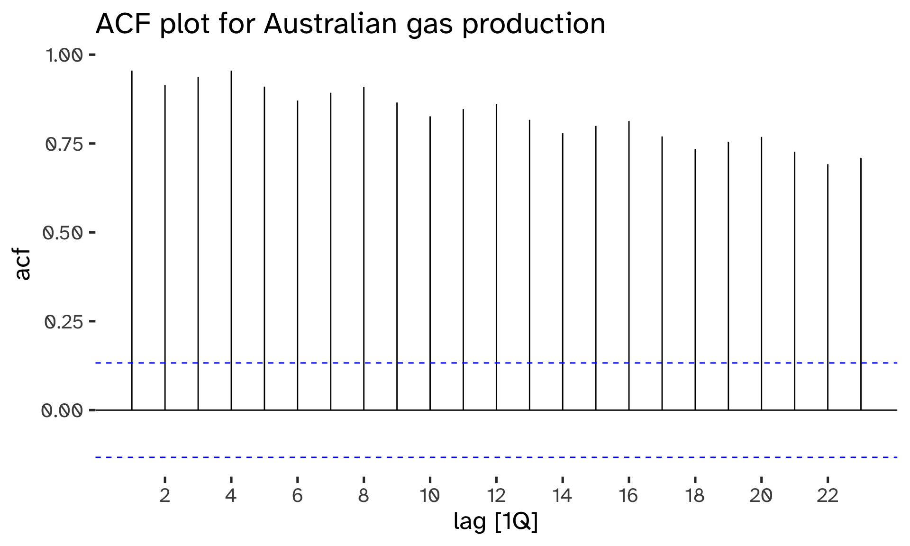
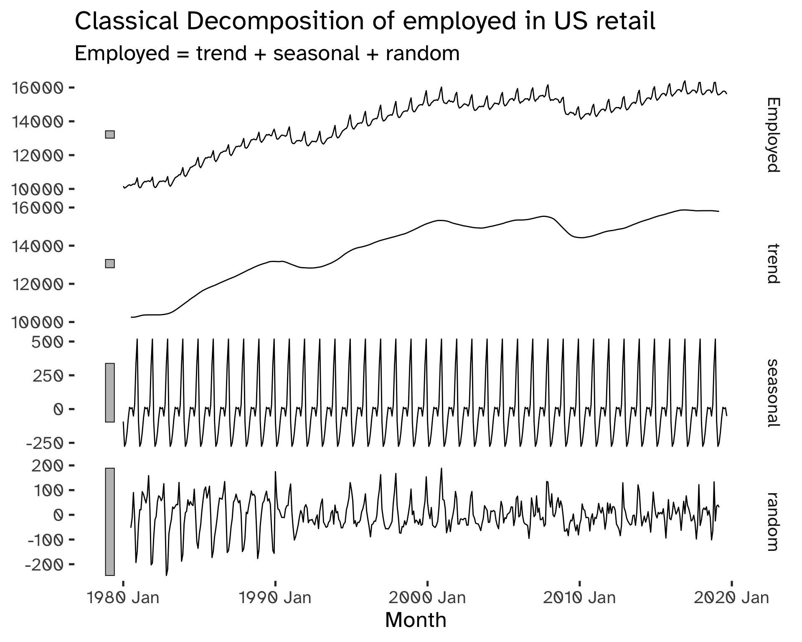

BA-Exercises

Time Series Decomposition
Reconstruct the calculations needed to derive the components in the multiplicative decomposition that was obtained for the Australian Gas Production.
The multiplicative decomposition obtained was a classical multiplicative decomposition:
Code
aus_production %>%
model(
class_mult = classical_decomposition(
Gas,
type = "m"
)
) %>%
components() %>%
autoplot() +
labs(
title = "Classical Decomposition of Australian gas production"
)Warning: Removed 2 rows containing missing values (`geom_line()`).
The model behind the multiplicative decomposition is the following:
Y_t = T_t \times S_t \times R_t
First, an appropriate exponential smoothing has been applied to the series.
Code
aus_production %>%
gg_lag(
Gas,
geom = "point"
) +
labs(
title = 'Lag plot for Australian gas production'
)
We can observe a k=4 seasonal pattern. This can be confirmed by an ACF plot:
Code
aus_production %>%
ACF(Gas) %>%
autoplot +
labs(
title = "ACF plot for Australian gas production"
)
If no argument are passed, a symmetric window with equal weights is used to obtain the T_t (trend component). The following step is to de-trend the series:
\frac{y_t} {T_t}
The seasonal component is computed by taking the average of all the de-trended values for each for that season. The decomposition is multiplicative: hence, the individual seasonal term are adjusted to ensure that they sum up to m. The remainder component is then computed by dividing by the trend and seasonal component:
R_t = \frac{y_t}{ S_t T_t}
To conclude, de-seasonalize the series:
\frac{y_t}{S_t}
> Compute a 5-MA and 9-MA for the oil prices in the prices dataset and overlay them to the original data ensuring that suitable labels are used to identify the different fits
Code
prices %>%
mutate(
'5-MA' = slider::slide_dbl(
oil,
mean,
.before = 2,
.after = 2,
complete = TRUE
),
'9-MA' = slider::slide_dbl(
oil,
mean,
.before = 4,
.after = 4,
complete = TRUE
)
) %>%
na.omit() %>%
ggplot(
aes(
x = year
)
) +
geom_line(
aes(
y = oil
),
color = "gray90"
) +
geom_line(
aes(
y = `5-MA`,
color = "5-MA"
)
) +
geom_line(
aes(
y = `9-MA`,
color = "9-MA"
)
) +
custom_color +
labs(
title = 'Moving Averages of oil prices'
)
Decompose the US Retail sector time series. Use an additive classical decomposition. Plot the components and comment on possible issues in the resulting decomposition.
Code
us_retail <-
us_employment %>%
filter(
Title == "Retail Trade",
year(Month) >= 1980
) Code
us_retail %>%
model(
classical_decomposition(Employed)
) %>%
components() %>%
autoplot +
labs(
title = 'Classical Decomposition of employed in US retail'
)Warning: Removed 6 rows containing missing values (`geom_line()`).
The main assumption in this case that the seasonal term is assumed as constant: the remainder term is a clear indication of eteroskedasticity and this assumption needs to be reconsidered.
Code
us_retail %>%
autoplot(Employed) +
labs(
title = "Employment in the US retail sector"
)From the original series we can see that the magnitude of the seasonal variation depends on the level of the series; therefore, a multiplicative decomposition might be more appropriate.
Derive the numerical values for the multiplicative triple exponential smoothing (“Triple_Mult”) of the Australian beer production model seen above.
Code
aus_beer <- aus_production %>%
filter(year(Quarter) >= 2000) %>%
select(Beer)
fit <- aus_beer %>%
model(
Triple_Mult = ETS(
Beer ~ trend("A")+season("M")+error("M")
)
)
fit %>%
augment() %>%
select(
Quarter,
.fitted
) %>%
head()| Quarter | .fitted |
|---|---|
| 2000 Q1 | 434.4008 |
| 2000 Q2 | 396.7817 |
| 2000 Q3 | 417.7119 |
| 2000 Q4 | 494.6398 |
| 2001 Q1 | 434.7939 |
| 2001 Q2 | 399.8998 |
Focus on the Tobacco production in Australia: the values are contained in the
aus_productiondataset: discuss whether a single, double or triple exponential smoothing would be more appropriate to smooth this time series. Compare the 20-step ahead forecast obtained when using a triple exponential smoothing with a damped and non-damped trend.
Code
aus_tobacco <- aus_production %>%
select(Tobacco) %>%
na.omit()
aus_tobacco %>%
autoplot(Tobacco) +
labs(
title = "Australian tobacco production"
)The dataset shows a strong seasonal and trend-cycle component: hence, simple exponential smoothing is not appropriate, as double exponential smoothing, because they cannot deal with the seasonal component. Triple Exponential Smoothing (Holt-Winter’s method) is the preferred choice in this context.
Code
fit <- aus_tobacco %>%
model(
linear = ETS(
Tobacco ~ error('A') + season('A') + trend('A')
),
damped = ETS(
Tobacco ~ error('A') + season('A') + trend('Ad')
),
)
fc <- fit %>%
forecast(
h = 20
)
fc %>%
autoplot(
aus_tobacco,
level = NULL
) +
custom_color +
labs(
title = "Damped and linear ETS forecasts \n for the Australian tobacco production"
)Focus on the
global_economydataset: pick a country (say France) and produce a simple exponential smoothing forecast for the country GDP. Discuss whether a double exponential smoothing or triple exponential smoothing would be suitable to use for smoothing the time series.
Code
fit <- global_economy %>%
filter(
Country == 'Japan'
) %>%
model(
ETS(
GDP ~ error('A') + season('N') + trend('N')
)
)
fc <- fit %>%
forecast(
h = 10
)Code
fc %>%
autoplot(
global_economy %>%
filter(
Country == 'Japan'
),
level = NULL,
color = "indianred4"
) +
labs(
title = "Simple exponential smoothing forecast for Japan GDP"
)
A double exponential smoothing would be more effective, as we have a clearly trended series:
Code
fit <- global_economy %>%
filter(
Country == 'Japan'
) %>%
model(
ETS(
GDP ~ error('A') + season('N') + trend('A')
)
)
fc <- fit %>%
forecast(
h = 10
)Code
fc %>%
autoplot(
global_economy %>%
filter(
Country == 'Japan'
),
level = NULL,
color = "indianred4"
) +
geom_line(
aes(
y = .fitted,
col = "Smoothed Series"
),
data = fit %>%
augment
) +
labs(
title = "Double exponential smoothing forecast for Japan GDP"
)